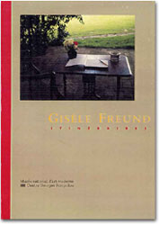
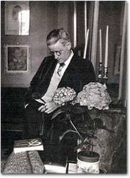
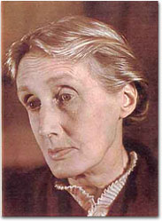
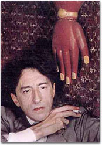
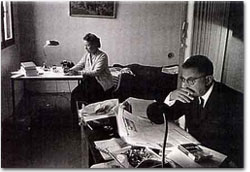

|
|

|
|
パゾリーニやカサヴェデスの映画のグラフィック・デザインや写真を使ったシャープなブック・デザインで知られる坂川栄治さんは、大の写真好きである。事務所には、なにげなくオリジナル・プリントが飾ってある。 |
|
資金がなければ真似ができないように思えるけれど、坂川さんに言わせると「工夫次第で、だれにでもできるよ」。 きれいに見える写真の飾り方、フレームの選び方、写真集を飾るコツ……。もっともっと日常的に写真を楽しもう。坂川流写真とのつきあい方を、坂川さんがコレクションしている写真集などを通して語ってもらった。今回はジゼル・フロイント。ジョイス、サルトル、コクトーなど20世紀を代表するたくさんの作家をファインダーにおさめたドイツ人作家だ。 |
|

ジェイムズ・ジョイス |
|
| ギャラリーを開設して２番目に扱った写真家が、ジゼル・フロイントだった。 日本で本格的な形で紹介されるのが初めてのそのドイツ人女性作家は、１９１２年生まれ。その時すでに８３歳という高齢だった。 パリのギャラリーからやってみないかと送られてきた資料を一目見て、私はすぐに彼女の個展を開きたいと思った。ファイルの中にはヨーロッパの、歴史に名を残した著名な文学者や思想家、アーティストの有名な肖像写真がたくさん入っていた。 |
|
|

ヴァージニア・ウルフ |
ジェームス・ジョイス、ウオルター・ヴェンヤミン、ヴィタ・サックヴィル・ウエスト、ジャック・プレヴェール、アンリ・ミショー、ジャンポール・サルトル、シモーヌ・ド・ボーヴォワール、サミュエル・ヴェケット、コレット、ル・コルヴィジェ、ポール・ヴァレリー、アンドレ・ジード、ジャン・コクトー、ヴァージニア・ウルフ、ヴォルヘス、ヴォナール、マチス、フリーダ・カーロ、マン・レイ、アンドレ・ブルトン、マルセル・デュシャン、アルゼンチン大統領の妻エヴィータｅｔｃ． |
| だから“ITINERAIRES（イチネレール／道程）”というタイトルで印刷された写真集のページをめくるたびに、見たことのある作家の顔がたくさん出てきて驚かされたのである。 中でも特に際立っていたのがジェームス・ジョイスの写真だった。彼が自分の肖像写真として使い、世にだしたものすべてが、彼女が撮影したものだった。写っているジョイスと写真は「フィネガンズ・ウェイク」や「ユリシーズ」で有名になったけれど、写真家の名前はほとんど知られなかったのである。ジョイスの写真に見覚えのある人はいても、写真家の名前を知る人はいない。 |
|
| ベルリンで生まれたユダヤ人のジゼル・フロイントは、フライブルク大とフランクフルト大に学びながらもレジスタンスにかかわっていたこともあって、２１歳の時にナチの迫害を恐れてパリに逃れた。その時仲間のうちで生き残ったのは彼女一人だった。 １９３６年にはソルボンヌ大学で博士号を取得すると同時に、在学中からやっていた写真を仕事にして働き始めた。そしてその頃、パリで文筆家であり編集者でもあった２０歳年上のアドリエンヌ・モニエと知り合い、モニエの経営する書店『本の友の家』で最初の写真展を開く。 当時『本の友の家』は、フランスのアヴァンギャルド文学の中枢であり、モダニズム運動の誕生の場だった。そして多くの有名作家の集まるサロンだった。 |

ジャン・コクトー |
| フロイントは、書店が忙しい時はモイエを手伝った。そのうち彼女は友人の映画監督からもらった映画のフィルムの切れっ端を使って、カラーの写真を撮り始める。そしてある時文筆家であるモイエに、彼女の友人である作家全員を撮影したいと頼んでみた。モイエに企画の賛同を得たフロイントは、一年も経たないうちに全員の写真を撮り終えてしまう。そうやって友人のおかげもあって今では世界的に有名になった作家たちも、当時はまだ小娘にすぎなかったフロイントのフレームの中におとなしくおさまったのである。 | |
|

サルトルとボーヴォワール |
そういえば写真のクレジットに「１９３９年」という年号が多いことに気がつく。 その年が彼女にとっていかに豊穣の年になったかがうかがい知れる。フロイント、２７歳。 私は写真の年号を確認しながら、人との出会いの不思議さとタイミングの妙について考えてしまった。運命の糸はどこかでこんがらがり、どこかで結び付き、どこかで奇跡を生む。その絡まり方は神のみぞ知る、である。 |
| 糸がたくさんの障害や幸運の狭間をぬって伸びていく姿を想像する。糸を引っ張る力とは何だろう。それは老若を問わずの思い付きと情熱だったのじゃないだろうか。 いずれにせよ私はまだ存命中かもしれないジゼル・フロイントの生涯が、１９３９年という一年に集約されているように感じた。それはまさに名高いワインの最高の年と同じような意味合いを持っている気がしてしまう。 その時は何が起きているのか分からない。若い時に不安や迷いがあっても、それでも自分を信じて進むしかない。そうやって人は年を重ねる。そしてかなりの時間を経てから振り返った時、昔自分がいた場所がどんなところだったかに気がつく。そして今どこにいるのかが分かる。失敗も成功もない。いかに自分を信じたかという結果しかない。 私はそんなことを、ジゼル・フロイントの写真を通して学んだ気がしている。 |
|
| 坂川栄治（さかがわ・えいじ） 1952年北海道生まれ。凸版印刷、百貨店宣伝部を経て、1987年坂川事務所設立。雑誌「SWITCH」のアートディレクターを創刊から４年間務める。その後、書籍の装幀を手がける一方、広告、PR誌、カタログ、CDデザイン、映画ポスターなど幅広いアートディレクションを行なう。1993年に講談社出版文化賞ブックデザイン賞受賞。現在までに手がけた装幀本は2600冊を超える。代表作に、吉本ばなな『TUGUMI』、ヨースタイン『ソフィーの世界』などのベストセラー作品がある。 |